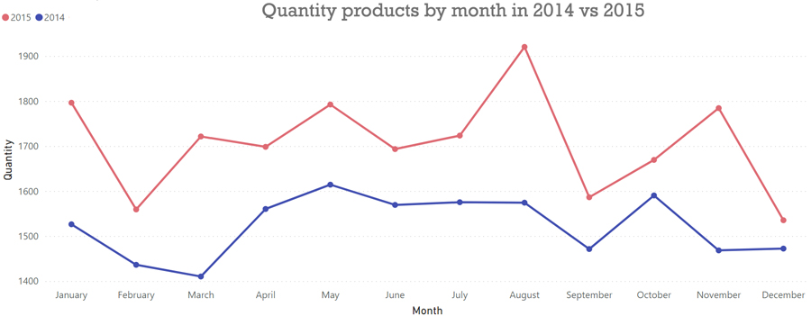

Analyze Data about Groceries Store Products
This is my simple analyze data and visualization project about Groceries Store using SQL and Microsoft Power BI
This is my second project on MySQL based on Groceries Store data. I got the dataset from Keggle. I use 3 tools to analyze the data. The tools are Excel to prepare the data, MySQL Workbench to import the data with Beekeeper Studio as SQL editor. To visualize the data i use Microsoft Power BI. The data have 38765 rows x 4 columns which 1 column i added to add primary key on this data.
This project will concern about:- Top 10 selling products
- Top 10 unsold products
- Top 5 customers who buy frequently
- The number of products purchased per year
- The number of products purchased per month
- The number of products purchased by day
- Visualize the Word cloud of products
First, I download the data from keggle (csv file) and then I import it to excel to make sure my data have no error especially on date column. Because, date format in default usually not YYYY-MM-DD format which is that's not readable on MySQL. First, i must create table to prepare the imported file:
CREATE TABLE groceries_list ( number INT PRIMARY KEY, member_number INT, date DATE, item_description VARCHAR(50) );
I must make sure the data has no NULL values. So:
SELECT * FROM groceries_list WHERE member_number = NULL OR date = NULL OR item_description = NULL;

The data has no NULL values. So i can move to the next steps.
Top 10 selling products
This section will show top 10 most purchased
SELECT item_description AS Item, COUNT(item_description) AS "Item Count" FROM groceries_list GROUP BY item_description ORDER BY COUNT(item_description) DESC LIMIT 10;
The chart show that the whole milk product occupying the first position of top 10 best selling products followed by vegetables products. So, groceries must improve the quality of other products besides milk and keep maintain the quality of milk products.
Top 10 unsold products
This section will show top 10 most unsold products
SELECT item_description AS Item, COUNT(item_description) AS "Item Count" FROM groceries_list GROUP BY item_description ORDER BY COUNT(item_description) LIMIT 10;
The chart show that the kitchen utensil product occupying the first position of top 10 unsold products followed by preservation products. Maybe, groceries can remove kitchen utensil products or preservation products to reduce capital costs.
Top 5 customers who buy frequently
This section will show top 5 customers who buy frequently
SELECT member_number AS member, COUNT(item_description) AS "Quantity" FROM groceries_list GROUP BY member ORDER BY COUNT(item_description) DESC LIMIT 5;
The chart show that the customer number 3180 is the first position customer who buy frequently than others, followed by 2051, 3050, 3737 and 3915. The chart also look uniform from one to other which means that they are loyal customers. Groceries can make bonus or reward to them (customers who buy frequently), because it can keep customers buying at the groceries.
The number of products purchased per year
This section will show the number of products purchased per year
SELECT COUNT(item_description) AS "Item Count", YEAR(date) AS tahun FROM groceries_list GROUP BY tahun;
The chart show that in 2015 sales increased compared to 2014 sales. Maybe the groceries have a good market at 2015 because the sales increased.
The number of products purchased per month
This section will show the number of products purchased per month
SELECT COUNT(item_description) AS "Item Count", MONTH(date) as bulan FROM groceries_list GROUP by bulan ORDER BY bulan;
Groceries products are mostly purchased in August but how about if i separate it by month in each year, is August still the most popular month for product purchases? Let's check it out.
-- in 2015 SELECT COUNT(item_description) AS "Item Count", MONTH(date) as bulan FROM groceries_list WHERE YEAR(date) = '2015' GROUP by bulan ORDER BY bulan; -- in 2014 SELECT COUNT(item_description) AS "Item Count", MONTH(date) as bulan FROM groceries_list WHERE YEAR(date) = '2014' GROUP by bulan ORDER BY bulan;
The chart between sales in 2014 and 2015 mostly look similar. In february both of years have decreased from January. Then, if look at May, both of years have increased sales which is good. Between June and August both of years look different. At 2014, sales have a constant trend but in 2015 sale have an increasing trend. It seems that there is a good strategy in 2015 compared in 2014. In September both of years have a downward trend, so it's better evaluate what's going on in September. However, this trend is good because in 2015 each month has increased sales compared in 2014.
The number of products purchased per day
This section will show the number of products purchased per day
SELECT COUNT(item_description) AS "Item Count", weekday(date) AS hari FROM groceries_list GROUP BY hari ORDER BY hari;
Groceries products are mostly purchased in Thursday but how about if i separate it by month in each year, is August still the most popular month for product purchases? Let's check it out.
-- in 2015 SELECT COUNT(item_description) AS "Item Count", weekday(date) as hari FROM groceries_list WHERE YEAR(date) = '2015' GROUP by hari ORDER BY hari; -- in 2014 SELECT COUNT(item_description) AS "Item Count", weekday(date) as hari FROM groceries_list WHERE YEAR(date) = '2014' GROUP by hari ORDER BY hari;
The chart between sales in 2014 and 2015 mostly have opposite trend. But, Thursday is still best choice because the value is not much different between 2014 and 2015 and it's mean Thursday still have the biggest sales quantity and mean quantity than others.
Visualize the Word cloud of products
This section will show the world cloud of products. World Cloud is very useful especially to display any keywords at most. So, in this case we can know what groups of items are frequently purchased. We don't have a query because Microsoft BI can synchronize directly.
From Word Cloud Vegetables word is the biggest number of words. It means that Vegetable is the product most frequently purchased. Product like milk and fruit also quite a lot purchased by customers.